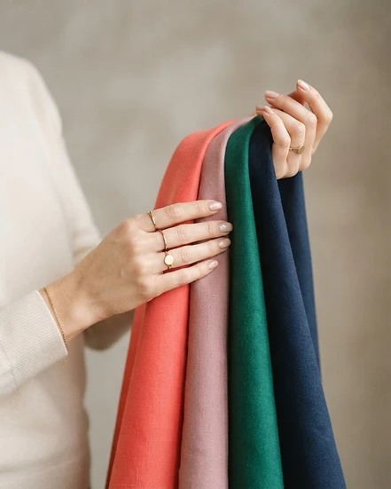
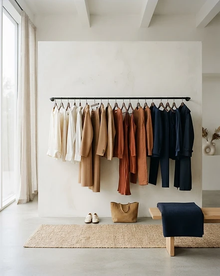
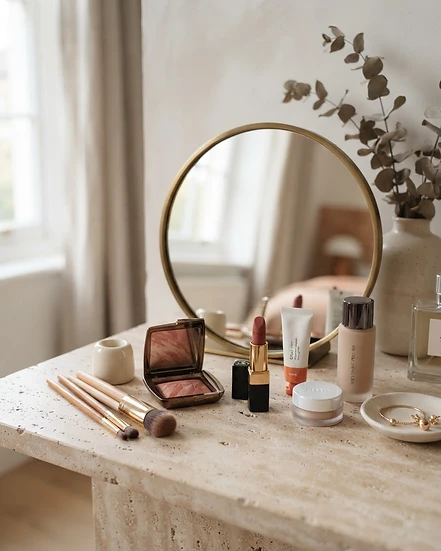
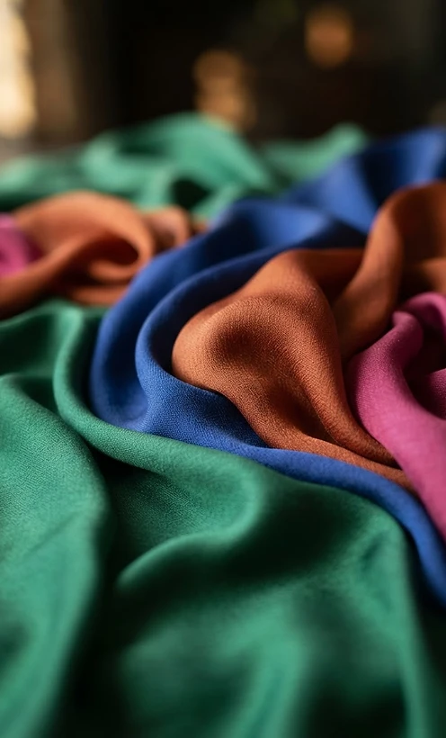
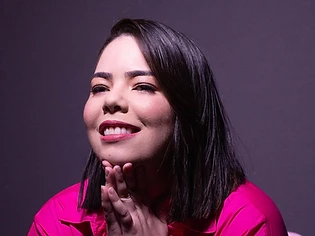
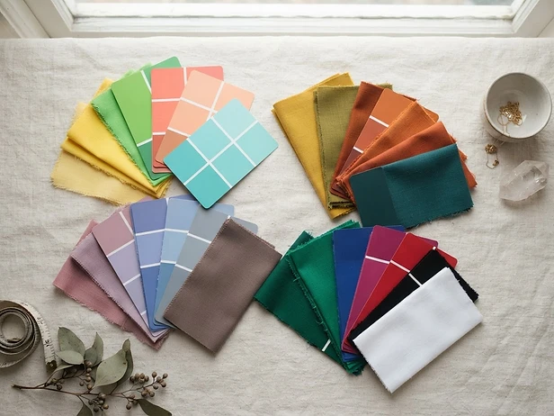
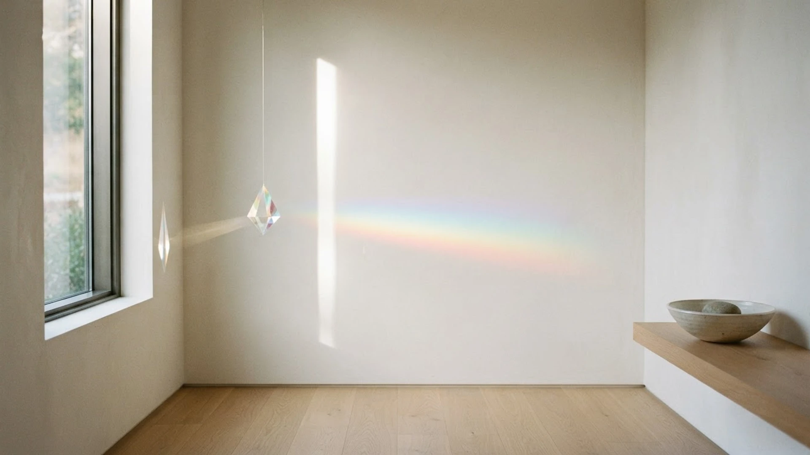

01Coloração Pessoal
Descubra a paleta que ilumina seu rosto e comunica sua força. Um teste minucioso com tecidos, sob luz natural, para revelar as cores que harmonizam com sua pele, seus olhos e seus cabelos.
Quero esteConsultoria de imagem · Coloração pessoal
Consultoria de imagem e coloração pessoal para a mulher que deseja traduzir sua essência em presença.
DNA Cromático
Da ciência das cores à construção do estilo: cada serviço é uma jornada de autoconhecimento visual.

01Descubra a paleta que ilumina seu rosto e comunica sua força. Um teste minucioso com tecidos, sob luz natural, para revelar as cores que harmonizam com sua pele, seus olhos e seus cabelos.
Quero este
02A construção de um guarda-roupa que narra a sua história. Entendemos sua rotina, seus objetivos e sua personalidade para criar combinações que funcionam de verdade.
Quero este
03O equilíbrio entre o que você sente e o que o mundo vê. Formatos, linhas e acessórios escolhidos para valorizar seus traços e reforçar a mensagem que você quer transmitir.
Quero esteAs quatro estações
Quente · Clara · Luminosa
Energia solar e frescor. Tons vivos e aquecidos que trazem leveza e brilho ao rosto.


Quem é Ananda
"Minha missão não é mudar quem você é, mas remover o ruído visual que impede sua verdadeira imagem de brilhar. Com um olhar técnico e sensibilidade estética, transformamos cores em confiança."
Tudo começou com maquiagem e acessórios. Entregas pela cidade, feiras e eventos em Teresina — e a descoberta de que ajudar mulheres a se sentirem bonitas era o meu lugar.
Aprendi a colocar meus medos de lado: aprendi a costurar e abri as portas da minha loja de acessórios. Tenho orgulho de cada passo que dei até aqui.
Cursos no Senac, como técnicas de styling, e Visual Merchandising e Vitrinismo pela Fundação Wall Ferraz. Aprender com outros profissionais é parte de quem eu sou.
Consultora de imagem e especialista em coloração pessoal, sigo me reinventando todos os dias para oferecer um olhar técnico, sensível e verdadeiro.
O método

Uma conversa profunda sobre sua rotina, seus desejos e a imagem que você quer comunicar.
Teste de coloração com tecidos sob luz natural e estudo dos seus traços e proporções.
Você recebe sua cartela personalizada e entende, na prática, por que cada cor te favorece.
Orientações de combinações, acessórios e compras para levar a sua nova leitura ao dia a dia.
Bastidores
Dúvidas
É uma análise que identifica quais cores harmonizam com as características naturais da sua pele, olhos e cabelos. As cores certas iluminam o rosto, suavizam marcas e transmitem saúde e presença.
De rosto limpo, sem maquiagem, e se possível com o cabelo preso. Assim a análise dos tecidos acontece da forma mais fiel possível.
Não. A ideia é aproveitar o que você já tem, entendendo como combinar melhor cada peça, e fazer compras futuras de forma mais consciente.
A duração varia de acordo com o serviço escolhido. No agendamento eu explico cada etapa e o que você recebe ao final.
É só me chamar no Instagram. Respondo pessoalmente e combinamos o melhor dia e formato para você.

Agendamento
Atendimentos em Teresina. Me chame no Instagram e vamos descobrir juntas a sua paleta.